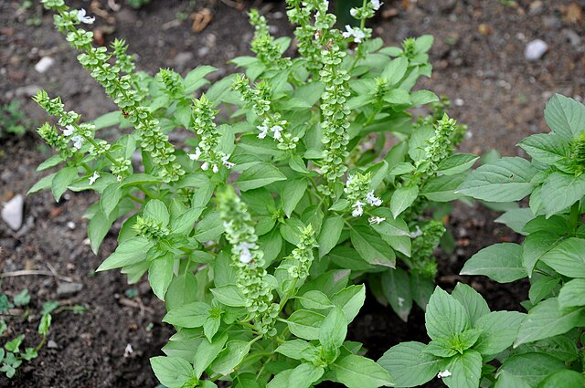

Ayuntamiento de Senés
JARDIN BOTANICO DE ESPECIES AUTOCTONAS DE SENES

Ocimum basilicum

La albahaca (Ocimum basilicum) es una planta herbácea anual muy apreciada por su aroma y su uso culinario y medicinal. Aunque es originaria de regiones tropicales, se cultiva ampliamente en el ámbito mediterráneo, donde se adapta bien a climas cálidos y soleados.
Presenta un porte bajo, generalmente entre 20 y 60 cm de altura, con tallos ramificados y hojas verdes, suaves y muy aromáticas. Durante la floración, produce pequeñas flores blancas o ligeramente violáceas agrupadas en espigas.
La albahaca es originaria de Asia tropical, aunque se ha extendido por todo el mundo gracias a su cultivo. En la región mediterránea se encuentra principalmente en huertos, jardines y macetas, donde se desarrolla en condiciones cálidas y protegidas.
En zonas como Senés, su presencia está ligada al cultivo doméstico, siendo una planta habitual en patios y huertos tradicionales.
La albahaca posee propiedades digestivas, antiespasmódicas y ligeramente sedantes. Sus hojas contienen aceites esenciales que favorecen la digestión y ayudan a reducir molestias gastrointestinales.
También se ha utilizado tradicionalmente para aliviar el estrés y mejorar el bienestar general, además de su uso extendido en la gastronomía.
La albahaca simboliza la protección, la armonía y la buena suerte en diversas culturas. En el ámbito mediterráneo, se ha asociado con el hogar y el bienestar.
También representa la frescura y la vida, debido a su aroma intenso y su presencia en la cocina tradicional.
En Senés, la albahaca ha sido una planta habitual en patios y huertos, donde se cultivaba tanto por su uso culinario como por su aroma.
Se utilizaba para condimentar alimentos, especialmente en platos tradicionales, y también como planta aromática en el entorno doméstico.
La albahaca florece durante el verano, produciendo pequeñas flores que suelen eliminarse en cultivo para favorecer el crecimiento de las hojas.
La albahaca es una de las plantas aromáticas más utilizadas en la cocina mediterránea, especialmente en recetas tradicionales.
Su nombre proviene del griego “basilikon”, que significa “real”, reflejando su importancia histórica y cultural.